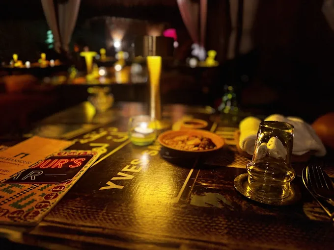

Wine Pairing Experience
Crafted to enhance every bite — on the spiced path of Morocco
Koh Phangan's only dedicated Moroccan wine pairing list — natural, characterful labels chosen to elevate the soul of our slow food.
At Dar Mansour, wine is more than a drink — it's a dialogue with the dish. Each label in our curated list is selected to elevate the complexity, warmth and aromatic depth of Moroccan slow food.
Start with the Unexpected
Maynard's Fine Tawny Porto — 2019 — Portugal · Glass (10cl) 290 · Bottle 2300
Red Wines
LIGNAC Comte Tolosan IGP — 2021
France · House · Glass (12cl) 200 · Bottle 1200
France · House · Glass (12cl) 200 · Bottle 1200
POGGIO ALTO Negroamaro Puglia IGT — 2020
Italy · 1350
Italy · 1350
CELLIERS DES PRINCES Sceau du Prince, Côtes-du-Rhône AOP — 2022
France · 1500
France · 1500
BURGO VIEJO Rioja Crianza DOC — 2019
Spain · 1650
Spain · 1650
CELLIERS DES PRINCES Blason du Prince, Châteauneuf-du-Pape AOC — 2022
France · 3700
France · 3700
White Wines
PUNTI FERRER Limited Edition, Rapel Valley — 2021
Chile · House · Glass (12cl) 200 · Bottle 1200
Chile · House · Glass (12cl) 200 · Bottle 1200
LE PETIT BALTHAZAR Pays d'Oc IGP — 2024
France · 1550
France · 1550
GRANGE MAZAN Côtes de Gascogne IGP — 2022
France · 1600
France · 1600
CHÂTEAU DU JAUNAY Muscadet de Sèvre & Maine sur Lie AOP, Vieilles Vignes — 2023
France · 1650
France · 1650
Rosé Wines
FAMILIA CORREA LISONI Rosé, Central Valley DO — 2021
Chile · House · Glass (12cl) 200 · Bottle 1200
Chile · House · Glass (12cl) 200 · Bottle 1200
COEUR DE MÉDITERRANÉE Rosé IGP — 2023
France · 1350
France · 1350
CUVÉE DÉSIR, Côtes de Provence Rosé AOP — 2023/24
France · 1500
France · 1500
Let us guide you to the perfect pairing — every wine has been carefully matched to highlight the soul of Moroccan cuisine.
Discover The Mansour Bar & cocktails
Reservation & Pre-order
Book your dinner & discover your perfect pairing
Reserve your evening and let us match each dish to a wine that sings.
◇◇◇